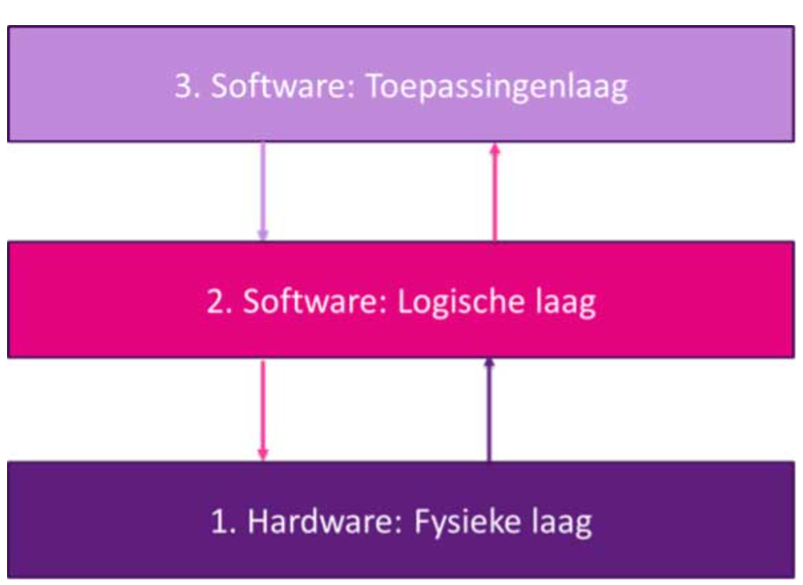

Inleiding over hoofdstuk 3: de logische laag
In de vorige les hebben we besproken welke belangrijke hardware componenten zich in de fysieke laag bevinden.
Maar hardware zonder software doet eigenlijk niks. Software kan opgedeeld worden in systeemsoftware,
dat is software die ervoor zorgt dat alles goed verloopt, en toepassingen (apps) die we als gebruiker gebruiken. Laten we eerst naar de systeemsoftware kijken, die zich in de logische laag bevindt en verzorgt de
communicatie tussen de hardware (fysieke laag) en toepassingen (toepassingenlaag).

Leerdoelen:
- Je kunt uitleggen dat het besturingssysteem onderdeel is van de logische laag;
- Je kunt ten minste 2 verschillende besturingssystemen noemen voor de PC en voor mobiele telefoon;
- Je kunt de belangrijkste taken van een besturingssysteem noemen.
- Je kunt belangrijke componenten van de logische laag benoemen en de werking ervan uitleggen;
- Je kunt de grootste verschillen tussen besturingssystemen benoemen;
- Je kunt de samenwerking tussen de componenten in de logische laag beschrijven;
- Je kunt uitleggen welke diensten de logische laag aan andere lagen (fysieke en toepassingen) levert.